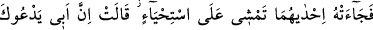
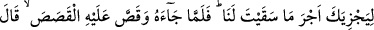
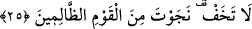
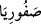
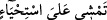
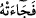

Fakat bu iki kız onun bu hâlini anladı ve koyunlarıyla beraber diğer insanlardan önce
dönüp babalarının yanına gelince, babaları: “Sizi acele ettiren şey nedir?” diye sordu.
Onlar şöyle dediler: Bize acıyan sâlih bir gence rastladık. O bizim hayvanlarımızı
sulayıverdi. Sonra gölgeye çekilerek: “Rabbim, doğrusu bana indireceğin her hayra
(lütfuna) muhtacım.” dedi. Bunun üzerine babaları, “Bu ac bir kimsedir” diyerek
kızlarından birine: “Git, onu bana çağır” dedi.
25. Derken, o iki kadından biri utana utana yürüyerek ona geldi: Babam, dedi,
bizim yerimize (hayvanları) sulamanın karşılığını ödemek için seni çağırıyor. Mûsâ,
ona (Hz. Şuayb’a) gelip başından geçeni anlatınca o: Korkma, o zalim kavimden
kurtuldun, dedi.
“Derken, o iki kadından biri” yâni büyük olanı bekârların âdeti olduğu üzere “utana
utana yürüyerek ona” Mûsâ (a.s.)’a “geldi:”
Bu kızın ismi Safûriyâ “
” idi.
Şuayb (a.s.)’ın, kızlarından birini yabancı bir erkeği çağırması için göndermesi câiz
midir? dersen buna şöyle cevap veririm: Öncelikle Şuayb (a.s.)’ın kızlarından başka
göndereceği hizmetinde bulunan bir erkek yoktu. Ayrıca Mûsâ (a.s.)’ın doğruluğu ve
iffeti kızlarının anlattıklarıyla ve vahiy nuruyla ortaya çıkmıştır.
“
”: Utana utana yürüyerek...” ifâdesi, “
(ona geldi)” cümlesindeki
fiilin fâilinden hâldir.
Ebûbekir b. Tâhir şöyle der: Bu kız, îmânının tam, nâmusunun şerefli ve nesebinin
değerli oluşundan dolayı utanarak gelmiştir. Hadîs-i şerîfte şöyle buyrulmuştur: “Haya,
îmandandır.”[99] Yâni îman şubelerinden biridir.
Bir bedevî şöyle dedi: Hayâ galib oldukça yüz mükerrem olmağa devam eder; dal da
kabuğu kaldıkça canlı ve yeşil kalmaya devam eder.
“Babam, dedi, bizim yerimize (hayvanları) sulamanın karşılığını ödemek için seni
çağırıyor.”
Mûsâ (a.s.) Şuayb (a.s.)’ı ziyaret etmek ve onunla tanışmak üzere dâvete icâbet etti,
yoksa tamah ettiği için değil. Bir diğer sebep de dağlık bir arazîde yalnız ve korkar bir
halde olmasıdır. Bu nedenle dâvete icâbet etti ve birlikte yola çıktılar. Kız önde, Mûsâ
(a.s.) ise arkasından yürüyordu. Rüzgar, kızın elbisesini vücûduna yapıştırdığı için